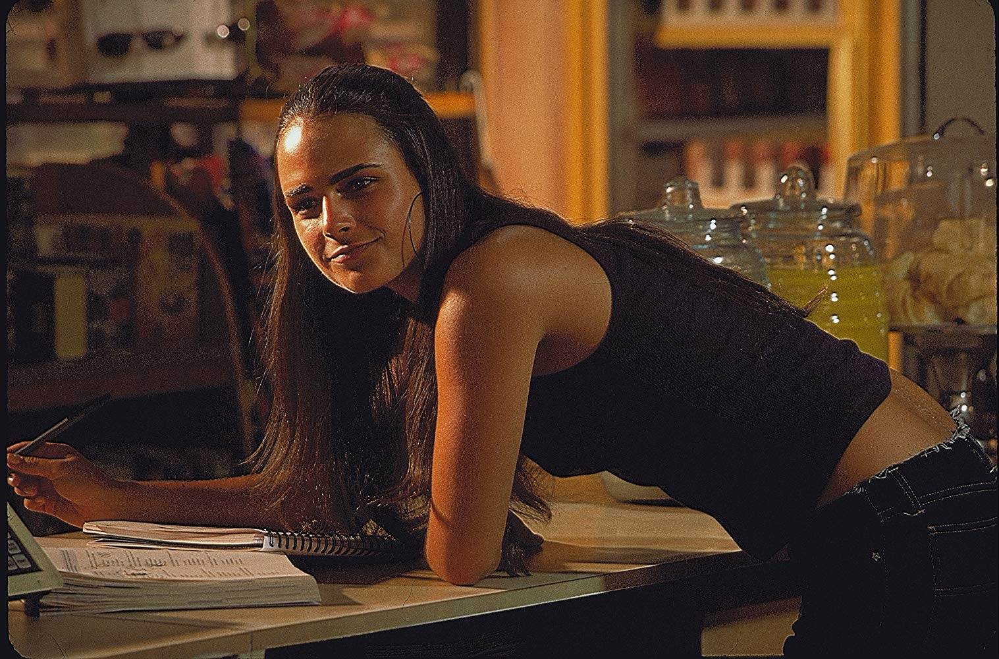
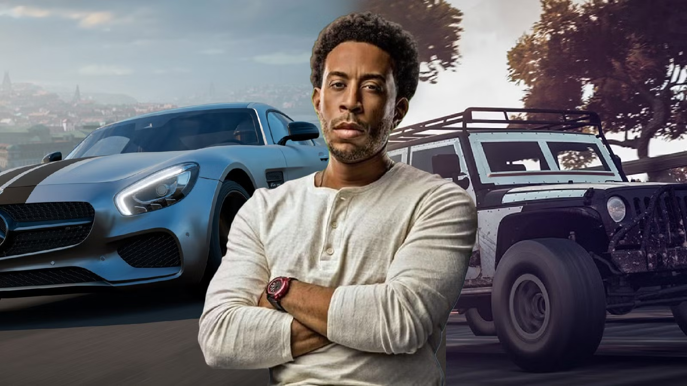

Dominic Toretto
Líder da equipe de pilotos, marcado pela sua liderança e forte senso de família.
Aprenda Criando
Nossa Equipe
Líder da equipe de pilotos, marcado pela sua liderança e forte senso de família.

Ex-agente do FBI que abandonou a lei pela paixão do racha e tornou-se o irmão de alma de Dom.

Ex-agente da Mossad, perita em armas e piloto de elite capaz de assumir qualquer missão de alto risco.

Agente federal implacável da DSS que passou de caçador da equipa Toretto a um dos seus maiores aliados.

O jovem mecânico génio da equipa, especialista em motores e calibração de computadores no primeiro filme.

Um dos membros originais da equipe de corridas de rua de Dominic Toretto.

Irmã de Dominic e motor essencial para manter a família sempre unida.

Empresário e vilão que dominava o crime organizado no Rio de Janeiro.

Piloto habilidoso e amigo de infância de Brian, responsável pelo alívio cômico.

Ex-agente das forças especiais britânicas com habilidades mortais ao volante.

Piloto de rua destemida e amiga de Brian durante as corridas em Miami.

Mecânico e o cérebro tecnológico responsável por todos os equipamentos do grupo.